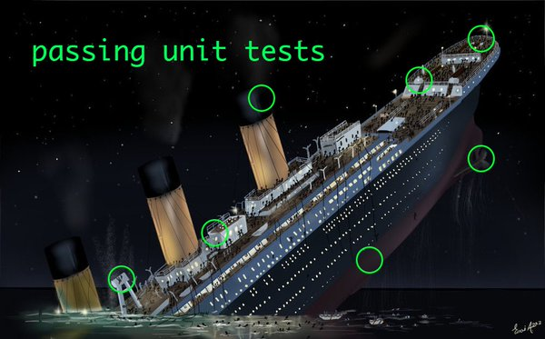

Т Е С Т Ы
Что такое юнит-тест
Юнит-тест выделяет небольшую часть приложения и проверяет ее поведение независимо от других частей
Это инструмент
-
такая же часть приложения,
как и рабочий код -
применяется командой,
а не отдельными разработчиками - помогает решать проблемы
- должен использоваться разумно
Хорошие юнит-тесты
-
Быстрые
В вашем приложении будут тысячи тестов. Тысячи, Карл. -
Изолированные
Без зависимостей и сайд-эффектов -
Повторяемые
Тест должен быть предсказуем. Результат не изменится, пока вы что-то не поменяете в коде. -
Уместные
Тесты не должны писаться дольше основного кода
Тест должен быть юнитом
Пирамида тестирования

радуги и единороги
В вашем приложении божественная архитектура.
Код состоит из слабо связанных модулей,
разнесенных на независимые слои абстракций.
Используйте юнит-тесты для тестирования отдельных частей системы и их взаимосвязей друг с другом.
что-то классно, что-то не очень
В целом все хорошо, хоть и не без багов и легаси.
Наибольшая проблема — уменьшение зависимостей между различными частями системы.
Тестирование обычно добавляется при рефакторинге больших блоков.
Сперва добавьте более высокоуровневые тесты. Затем выделите слабо связанные части и покройте их юнитами.
без слез не взглянешь
Писать тесты невероятно сложно.
Приложение ведет себя непредсказуемо.
Создайте высокоуровневые тесты, потом перепишите весь код.
Как вариант, используя TDD.
Code style
AAA. Arrange, Act, Assert
- Arrange подготовьте объекты, создав и установив все необходимое
- Act произведите действие
- Assert проверьте результат
AAA. Плюсы
- отделяем подготовку теста от проверки
- явно показываем, что тестируется
- тест легко читать
- увеличиваем DRY
Именование важно
- тесты могут быть документацией
- упавшие тесты описывают, что сломалось
- улучшается именование кода
как именовать
- покажите, какой класс/метод тестируются
- используйте describe для создания структуры тестов
- используйте it для описания поведения
Минимально необходимые тесты
- тесты устойчивы к изменениям кода
- приближаются к тестированию поведения, а не реализации
- без магических значений
Одна проверка – один тест
- явно показывается, что упало
- точно знаем, что в одном тесте не проверяется несколько кейсов
- (при этом допускается несколько проверок для одного объекта)
Не тестируйте приватные методы
- тестируйте поведение, а не реализацию™
- приватные методы никогда не используются отдельно
- это часто индикатор запашка от кода 💩
Избегайте логики в тестах
- уберите циклы и условия — тест должен быть простым
- меньше шансов допустить ошибку в самих тестах
- и еще раз, фокусируйтесь на результате, не проверяйте реализацию
Не используйте константы в тестах
- мое любимое тестируйте поведение, а не реализацию™
Советы по архитектуре
продолжение следует...
